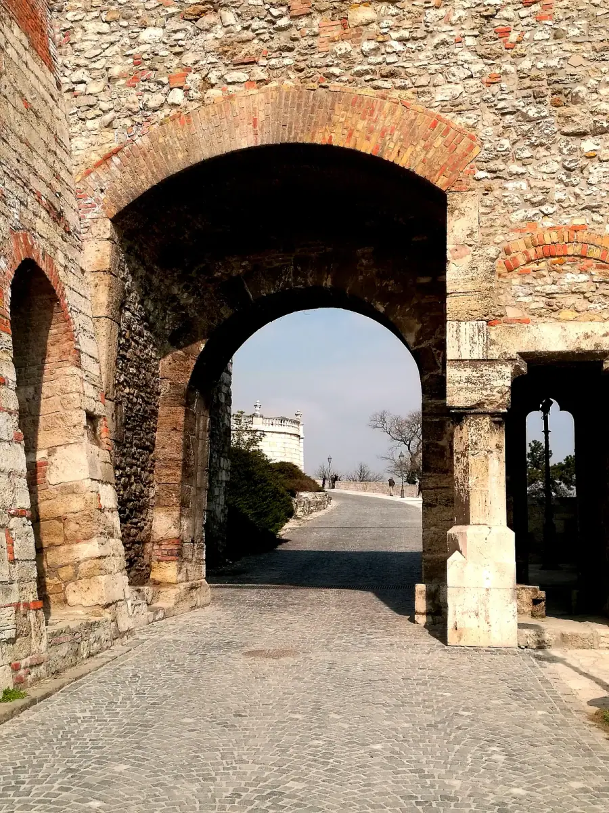
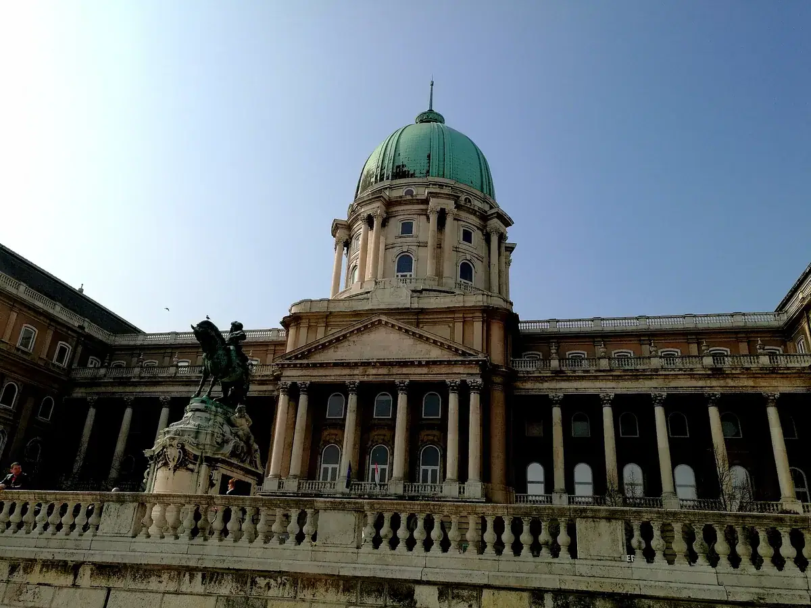
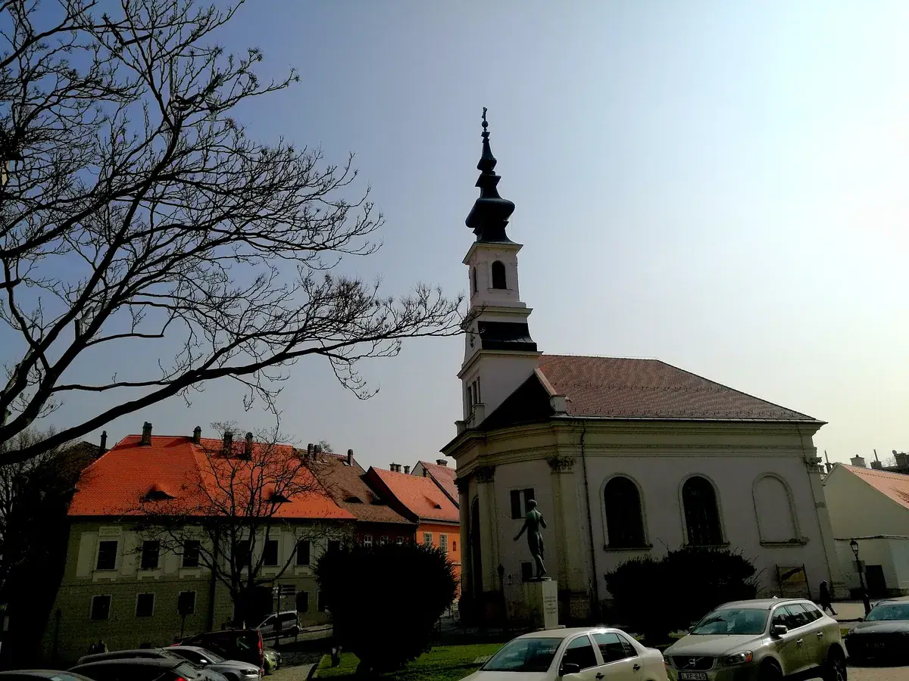
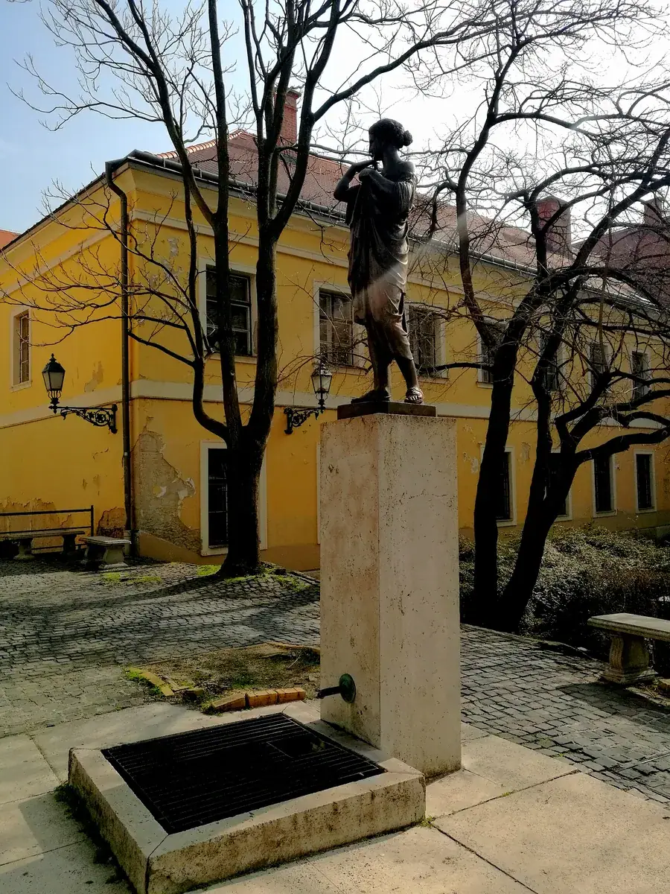
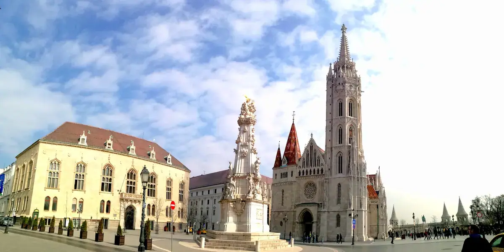

布达城堡——一座宫殿的三次死亡与重生，和一部匈牙利产业史
Buda Castle — a palace's three deaths and rebirths, and a history of Hungarian industry.

（2017 年 · 匈牙利 · 布达佩斯 · 布达城堡 / 皇宫）
一座为了防蒙古人而建的宫殿，后来又被炸了三次
你说的那座「老皇宫，后来好像是炸了，是个废墟」，指的应该就是布达城堡——布达皇宫。这座宫殿最早建于 1242 年，建造的直接原因，是匈牙利国王为了抵御蒙古（鞑靼）人的再次入侵——没错，和之前在布拉迪斯拉发那篇里讲的那场 1241 年蒙古西征，是同一段历史的延续，匈牙利在遭受那场浩劫之后，痛定思痛，才在布达山头修起了这座防御性质的王宫。
此后这座建筑的命运一直坎坷：16 世纪奥斯曼帝国占领布达期间，王宫一度被改建成清真寺；后来又几次毁于火灾；18 世纪哈布斯堡王朝统治时期做了大规模扩建，建成了今天能看到的巴洛克风格主体；1930 年重修过一次，结果还没过几年，就在二战末期的布达佩斯围城战中被炮火几乎夷为平地——1944 年底到 1945 年初，苏军和德军在这座城市展开了长达 108 天的惨烈巷战，战后布达佩斯几乎变成一片废墟，连皇宫地下的墓穴都被扒开来当作掩体使用。今天我们看到的布达城堡，是战后 1950 年重建的版本，而且当时的社会主义政府为了和旧王朝划清界限，刻意没有按原样复原，而是采用了更简约的现代建筑风格——所以你说「呆了一天，拍了很多照片，感觉像个废墟」，这个感觉不算错，这座建筑确实在过去的一百年里，经历了远比它 700 年历史里其他任何时期都更彻底的一次「死亡」，今天看到的只是它重生后的一个简化版本，原来的很多工艺品和雕塑，在战后重建的过程中也没能保住。


从「防蒙古」到「防炮火」：一座宫殿，几乎见证了匈牙利每一次被卷入的战争
如果把布达城堡的建造和历次重建串起来看，会发现一件挺震撼的事：这座宫殿几乎每一次「死而复生」，背后对应的都是匈牙利被卷入的一场外部力量的冲击——13 世纪的蒙古入侵，16 世纪的奥斯曼占领，20 世纪的两次世界大战。匈牙利这个国家的地理位置，注定了它几百年来一直处在几大帝国和几大势力的交界地带，布达城堡这栋建筑物，某种意义上就是这段「反复被卷入、反复重建」的历史最直观的物证。


从被动卷入，到主动选择：今天的匈牙利，换了一种方式「被卷入全球化」
放在今天看，匈牙利依然处在一个类似的地理十字路口上——只是这一次，决定它命运的不再是军队和炮火，是资本和产业链。前面那篇讲到的新能源汽车和电池产业集聚，还有你 2025 年考察的家居建材行业，本质上都是同一个逻辑的延续：匈牙利这个体量不大的国家，地处中欧腹地、紧邻德国和奥地利这些欧洲制造业核心区，又是欧盟成员国，天然具备承接产业转移的区位优势——就像它几百年前的地理位置总被军事势力盯上一样，今天它的地理位置又总被产业资本盯上。
不同的是，这一次匈牙利不是完全被动的——它是主动开出优惠政策去招商引资，主动选择要不要接住这些产能。但这种「主动选择」也不代表没有代价：就像之前提到的，新能源产业的快速涌入，已经在德布勒森这样的城市引发了当地居民对环境和水资源的真实担忧，并且直接反映到了 2026 年那场政府更迭的选票上。历史上布达城堡被反复摧毁重建，是因为匈牙利没有能力抵御外部力量；今天匈牙利在产业问题上的纠结和反复，则是因为它有了选择的能力，却还在学习怎么为这种选择承担后果。
写在最后
站在布达城堡这个曾经「因为防御而生、因为战争而毁」的地方，再回头看今天匈牙利在新能源产业里的处境，很难不生出一种历史感——同一片土地，同一个交通要冲的宿命，只是把「入侵者」换成了「投资者」，把「炮火」换成了「资本」。这算不算进步，或许要看你站在哪个立场上评判；但至少可以肯定的是，这块土地几百年来从未真正远离过「被更大的力量选中」这件事，布达城堡的废墟感，和今天德布勒森工厂门口的抗议声，讲的其实是同一个古老的故事。
有些地方几百年都没有远离过"被更大的力量选中"这件事，只是入侵者换成了投资者，炮火换成了资本。
——董立鑫 海鑫汇创始人兼执行总裁，新加坡世贸秘书长兼首席运营官
本文整理自董立鑫（Bruce Dong）海外产业考察记录，首发于海鑫汇。